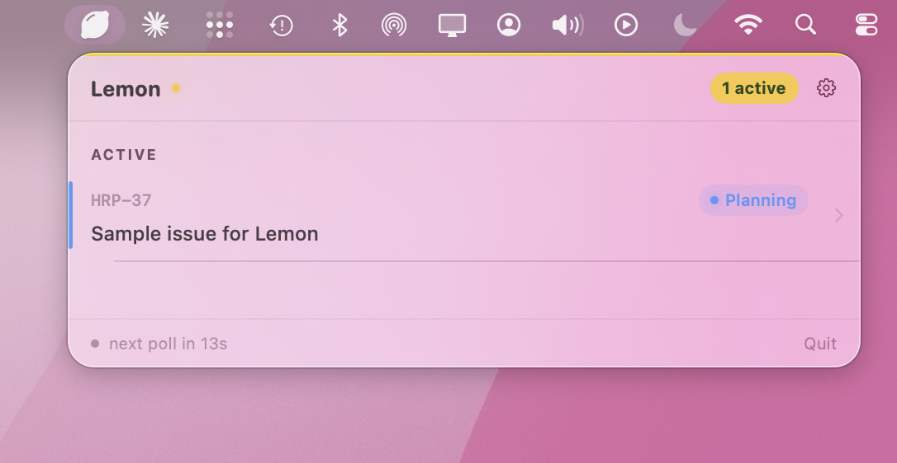
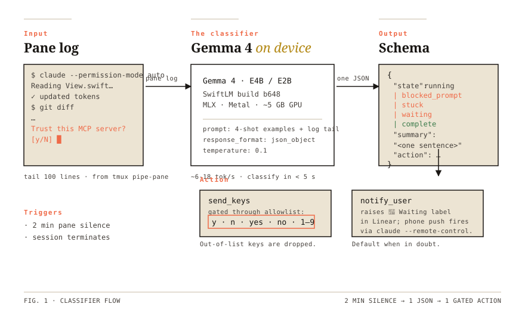
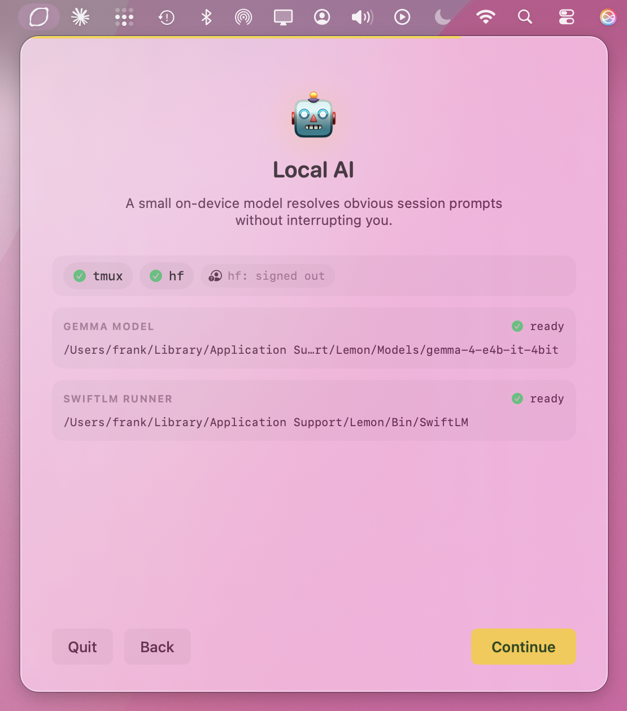
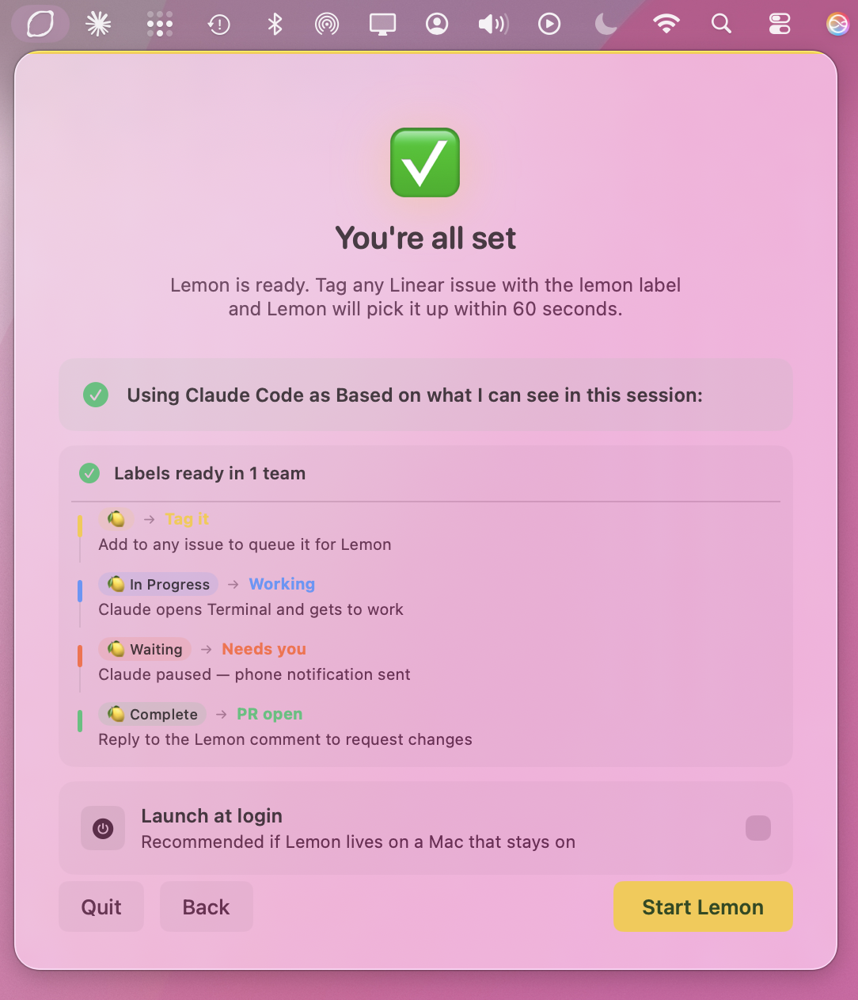
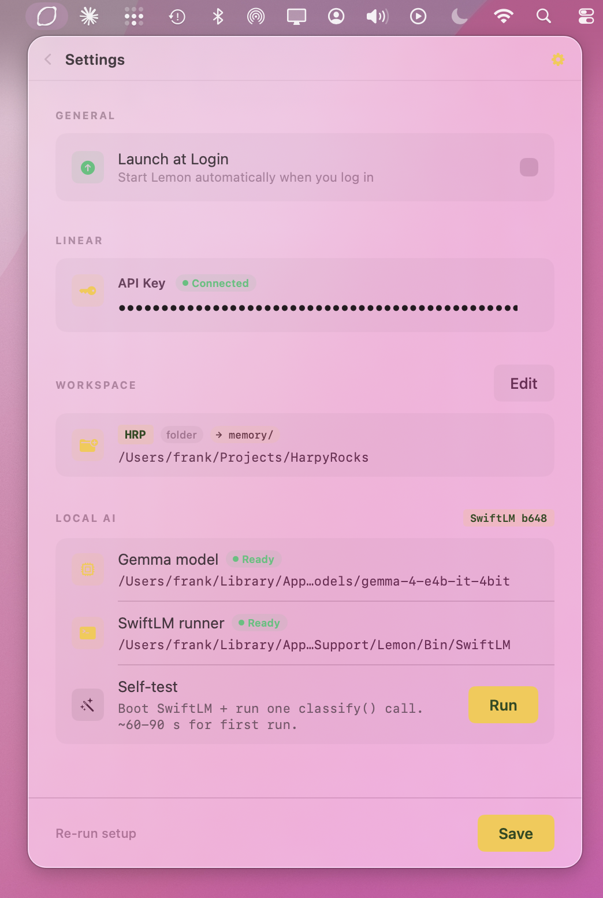

🍋
Trigger
You tag it.
Add the 🍋 label to any issue in your workspace. Lemon polls Linear every 15 to 45 seconds and picks it up.
Made for the Mac mini sitting on your desk.
Lemon’s entire surface in your Linear workspace is four labels and one comment. The popover just shows you what’s happening; the truth lives in Linear, where your team already works.
Add the 🍋 label to any issue in your workspace. Lemon polls Linear every 15 to 45 seconds and picks it up.
A git worktree spins up. A Terminal opens running claude --enable-auto-mode. The issue body is the prompt.
Hit an ambiguous choice? Claude pauses, the label flips, your phone gets a push. Reply on a walk, or pick up the terminal session back at your desk.
Lemon posts a Linear comment with the PR link and a one-paragraph summary. Reply to the comment to request revisions.
A SwiftUI menu bar app watches your Linear queue. Two icons: idle and active. It never opens windows you didn’t ask for.
When a 🍋 issue lands, the orchestrator creates a worktree at
/tmp/lemon-{id},
launches Claude Code inside it, and pipes the pane output to a log file.
You can Join from the popover at any time — the tmux session is real,
attaches in iTerm2 or Terminal.app, and stays running if you close the popover.


Gemma 4 (E4B or E2B, your choice) runs locally via SwiftLM & MLX on Apple Silicon. After two minutes of pane silence, Lemon hands it the tail of the log and asks: "what’s happening?"
The classifier returns a four-state JSON (running, blocked_prompt, stuck, waiting, complete) plus an optional action. For unambiguous confirmations — a "Trust this MCP server? [y/N]" — it answers. Anything ambiguous, it raises 🍋 Waiting and sits down.
y · n · yes · no · 1–9. Anything outside
that list is dropped before it reaches the pane.
Onboarding is a small five-card wizard that walks you through pasting a Linear API key, choosing repos, generating an optional LEMON.md to teach Lemon your conventions, and downloading the local model.
A big chunk of Lemon’s value is the silence detector — plus auto-accepting obvious confirmations, plus unsticking dumb prompts that Claude can’t see past on its own. All of that needs a local model running, which is why onboarding gates Continue on a downloaded Gemma and a SwiftLM binary.
Both are pulled inside the wizard. The model is from
mlx-community,
the runner is a signed release from
SharpAI/SwiftLM.
Nothing is built from source.
log stream predicate
ready to paste into Console.app.


The last onboarding step provisions all four labels in every Linear team you have access to, then verifies your Claude Code login. By the time you press Start Lemon, the workspace is ready to receive its first 🍋.

b648 · Self-test ready.
Settings is the single canonical place to check what Lemon is configured against — Linear key, workspace mapping, Gemma model path, SwiftLM binary — and to fire the on-demand Self-test before you trigger a real session.
Re-run setup in the corner if anything ever needs refreshing.
Lemon’s job is starting Claude Code sessions, watching them, and getting the result back into Linear — so you can skip the routine parts of your workflow (the obvious confirmations, the wait-for-PR cycle, the context juggle) and keep your attention on the work that needs thinking.
/tmp/lemon-log-{id}.txt, wiped on cleanup.Lemon is a small assembly of other people’s good ideas. The agent, the runtime, the model weights — all upstream. Lemon is the menu bar around them.
b648 from their releases.gemma-4-e4b-it-4bit
gemma-4-e2b-it-4bit
Have a Mac Studio and want to run a bigger model as your primary coding agent? Look at oMLX ↗. Same on-device idea as Lemon’s Gemma classifier, scaled up to the larger MoE models the M2/M3 Ultra can actually serve. Different shape of project, complementary ambition.
Lemon ships as a notarized Mac app, served direct from
lemon.living.
Build from source if you’d rather audit the wire first.
claude CLI you already authenticated.It’s skipping the dumb routine stuff — the tags you’d kickstart by hand anyway, the trust prompts you’d answer the same way every time, the PR wait you’d just sit through. Lemon orchestrates those out of your day.
And it makes Linear the surface, not a separate dashboard. You’ve been triaging there all morning anyway. Tag the ones you want kickstarted, get back to the work that actually needs your head.
That’s it. That’s the whole pitch.